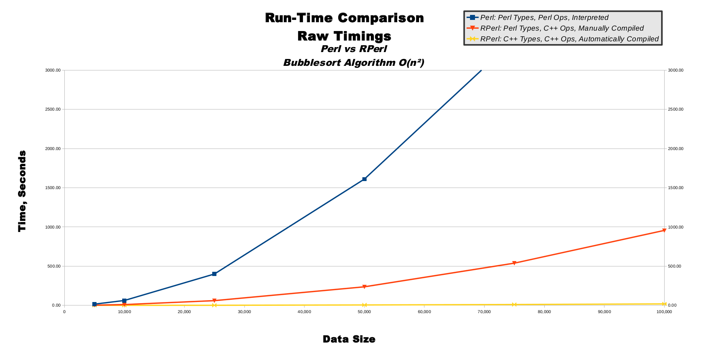
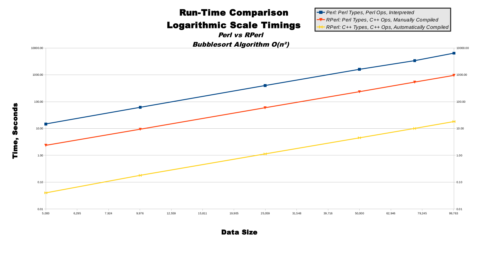
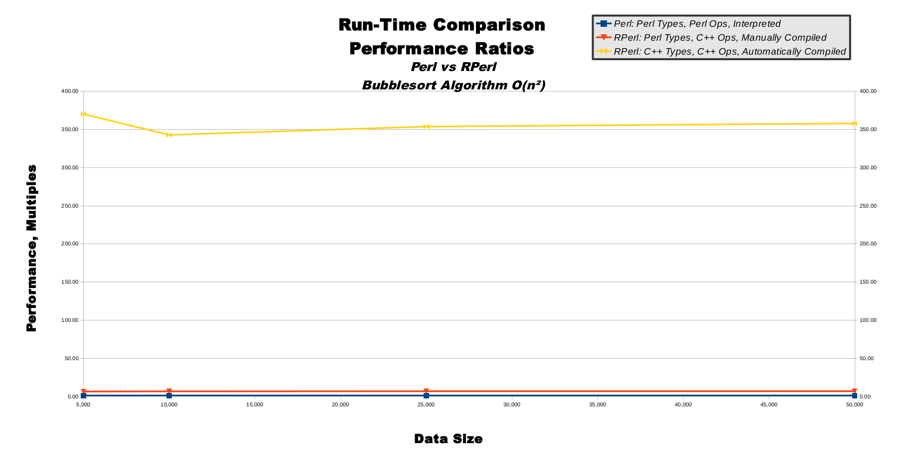
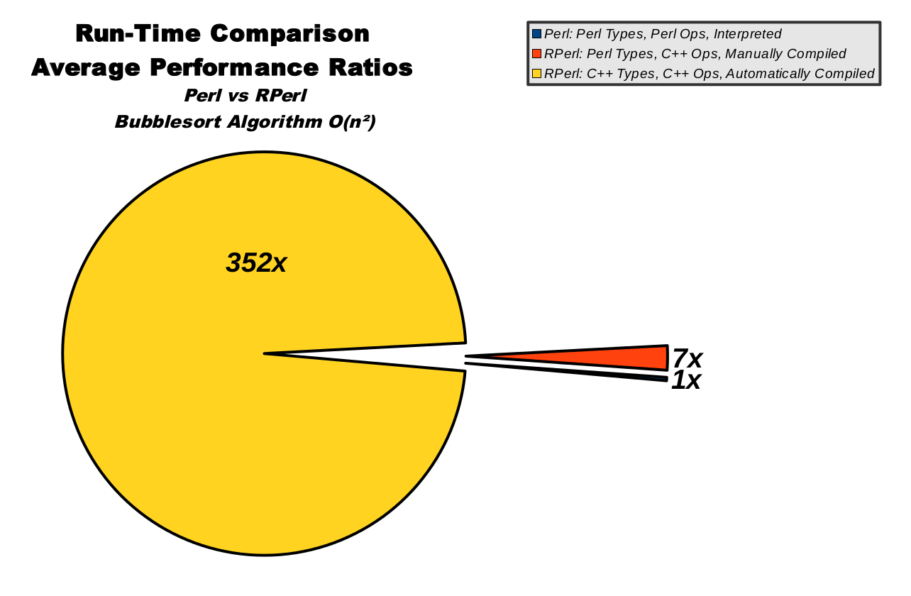

Bubble Sort Performance Benchmarks
Last Update: September 15th, 2015
Overview
Bubble sort is a slow-and-predictable sorting algorithm.Bubble sort includes 3 execution modes: pure Perl is shown in blue, RPerl's Perl data mode is red, and RPerl's C/C++ data mode is yellow.
Table Of Contents
Bubble Sort, Raw Timings, TableBubble Sort, Raw Timings, Graph
Bubble Sort, Logarithmic Scale Timings, Graph
Bubble Sort, Performance Ratios, Table
Bubble Sort, Performance Ratios, Graph
Bubble Sort, Average Performance Ratios, Chart
Bubble Sort, Raw Timings, Table
This table shows the most basic data which was gathered directly from running the benchmarks. The far left column shows increasingly-large input data set sizes, which is important because running the sort algorithm on a larger amount of input data should take a longer time. There is then 1 column for each of the 3 execution modes. Each execution mode was run for each data size.| Time, Seconds | |||
|---|---|---|---|
| Data Size | Perl: Perl Types, Perl Ops, Interpreted | RPerl: Perl Types, C++ Ops, Manually Compiled | RPerl: C++ Types, C++ Ops, Automatically Compiled |
| 5,000 | 15 | 2 | 0.04 |
| 10,000 | 62 | 9 | 0.18 |
| 25,000 | 400 | 59 | 1.13 |
| 50,000 | 1,610 | 236 | 4.50 |
| 75,000 | 3,389 | 538 | 10.10 |
| 100,000 | 6,163 | 955 | 18.20 |
Bubble Sort, Raw Timings, Graph
Predictable computing algorithms possess a quality known as computational complexity, which is a mathematical measurement used to predict how long an algorithm will take to run when given input data of different sizes. The bubble sort algorithm used in these performance benchmarks has a naturally inefficient computational complexity known as O(n**2), pronounced as "big oh of n squared". This means that if we give bubble sort an input data size of 5, then it will take a time factor of 5 squared to run, which is 25. If we give bubble sort an input data size of 10 (not much bigger than 5), then it will take a time factor of 10 squared to run, which is 100 (much larger than 25), and input of 15 will yield time factor of 225 (very much larger than 25). This computational complexity of O(n**2) is specific to the bubble sort algorithm, and most other sorting algorithms have a more efficient computational complexity, although that doesn't affect our testing because as long as we compare apples-to-apples (bubblesort-to-bubblesort) then our data holds value. In fact, bubble sort is perhaps a good benchmark choice, precisely due to its predictable, simple, inefficient nature. When we measure bubble sort's run-time, we can be reasonably sure our measurements are related to the 2 primary computational resources of CPU speed and RAM capacity, as opposed to misleading measurements of secondary computational resources such as hard-drive read/write or network bandwidth. This makes our measurements more meaningful.This line graph shows linearly-increasing data sizes on the horizontal x-axis also-linearly-increasing time on the vertical y-axis. The O(n**2) computational complexity of bubble sort directly converts to the graph of y=(x**2) or "y equals x squared", which produces the familiar parabola half-bowl-shape from high-school algebra. (Just imagine the mirror-image left halves of the bowl outlines are invisible, because we can't have data sizes smaller than 0.) You can see how pure Perl in blue has a very tall-and-narrow parabolic shape, whereas RPerl's Perl data mode in red makes a more wide-and-shallow parabola. Contrastingly, RPerl's C/C++ data mode in yellow is so much faster its parabola barely raises off the 0-second mark for the entire graph.
|  |
{kind=link}
Bubble Sort, Logarithmic Scale Timings, Graph
This line graph show logarithmically-increasing values on both the x-axis and y-axis. On a linear graph axis, the distance between 1-to-10 is equal to the distance between 101-to-110, and is one-tenth of the distance between 10-to-100. This means large values are shown far away from small values on a linear axis. On a logarithmic graph axis, the distance between 1-to-10 is about one-tenth of the distance between 101-to-110, and is equal to the distances between both 10-to-100 and 100-to-1,000. This means large values are shown close to small values on a logarithmic axis.The use of logarithmic axes can morph smooth curves into smooth lines, as shown in this line graph. Although there are tiny variances in the lines, to the human eye all 3 lines appear to be perfectly straight and running parallel to one another. The straightness of the lines indicates the bubble sort algorithm's computational complexity is scaling smoothly as predicted. In other words, the computational complexity is staying very close to O(n**2) as the input data sizes increase. The constant relative distances between the lines indicate the 3 execution modes are all scaling at a steady rate and closely proportionate to one another. This means our benchmark algorithms are running correctly, and scaling nearly perfectly.
|  |
{kind=link}
Bubble Sort, Performance Ratios, Table
This table shows the important performance ratios extrapolated from the first raw data table. The 4 columns are the same as the first table. The last row shows the simple rounded averages for each column, which gives us meaningful ratios from which we may evaluate all 3 execution modes. The ratios are normalized to pure Perl's performance, so the first ratio column is shown as all 1.0 values. This means for a data size of 5,000 we can see RPerl's Perl data mode runs 6.5 times faster than pure Perl, and RPerl's C/C++ data mode runs 342.8 times faster than pure Perl.Of special interest are the performance ratios of both RPerl data modes, which stay relatively steady as data size increases, indicating proper RPerl run-time performance scalability.
| Performance, Multiples | Data Size | Perl: Perl Types, Perl Ops, Interpreted | RPerl: Perl Types, C++ Ops, Manually Compiled | RPerl: C++ Types, C++ Ops, Automatically Compiled |
|---|---|---|---|
| 5,000 | 1.0 | 6.3 | 370.0 | 10,000 | 1.0 | 6.5 | 342.8 | 25,000 | 1.0 | 6.7 | 353.6 | 50,000 | 1.0 | 6.8 | 357.8 | 75,000 | 1.0 | 6.3 | 335.6 | 100,000 | 1.0 | 6.7 | 353.9 | Rounded Average | 1 | 6.5 | 352 |
Bubble Sort, Performance Ratios, Graph
This line graph illustrates the non-averaged data from the performance ratios table. Like the raw and logarithmic timing graphs, the x-axis represents input data size. Unlike the timing graphs, the y-axis represents performance ratios, not time in seconds. Pure Perl in blue is, by definition, a totally flat line at the 1.0 value along the bottom of the graph. RPerl's Perl data mode in red is a relatively steady line near the value of 6, hovering just above pure Perl near the bottom. RPerl's C/C++ data mode in yellow flies far above the other 2 execution modes at the top of the graph, showing the steadily-scaling performance ratios as the data size increases while moving to the right.|  |
{kind=link}
Bubble Sort, Average Performance Ratios, Chart
This pie chart illustrates the averaged data from the performance ratios table. The size of the pie slices represent relative speed, so a bigger slice means higher run-time performance. Pure Perl in blue is only about 0.28% of the total pie, while RPerl's C/C++ data mode in yellow clearly dominates.Also, this chart is awesome because it looks like a famous classic video game character that we all know and love. :-)
|  |
{kind=link}